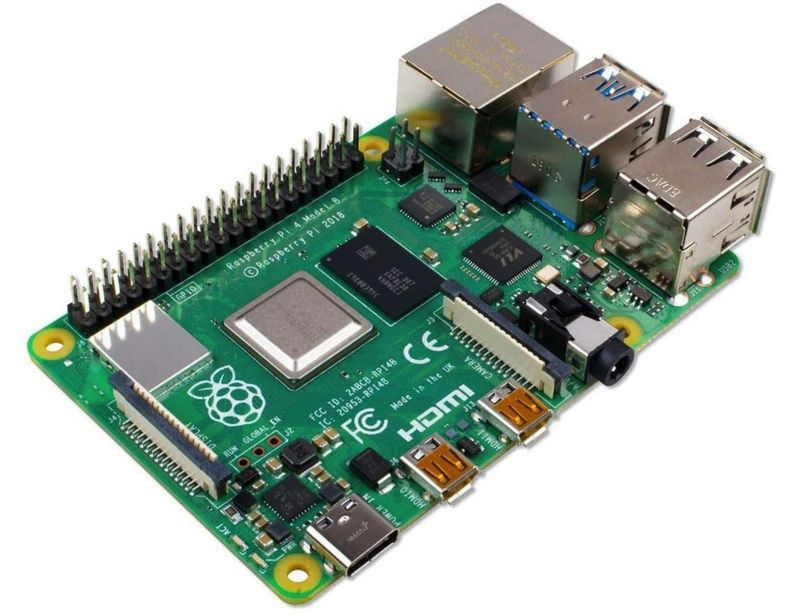

A team based in Colombia tested a ventilator made using a Raspberry Pi Computer and other easily accessible parts. The design and code were posted online in March by a man in California, who had no prior experience at creating medical equipment.
Marco Mascorro is a robotics engineer by profession but built the ventilator because he knew how vital the machines were in the battle against Covid-19.
After Marco posted his design he received a large amount of feedback from healthcare workers which he used to make improvements.
The Colombian team said the design was important for their South American country because parts for traditional models could be hard to obtain. By contrast, Mr Mascorro's design uses only easy-to-find parts - for example, the valves it employs can commonly be found at car and plumbing supply stores.
The Raspberry Pi plays a key role in the ventilator. The British invention is a small, low-cost computer board, which was originally created to help teach computer coding. But over the past eight years it has been embraced by enthusiasts and others to form the brains of a wide range of electronics projects.
Having a computer to control the ventilator is critical. It sets the air pressure, opens and closes valves, and can regulate whether a patient needs full or partial breathing assistance. Mr Mascorro has made the code involved open source, meaning that anyone can use it or modify it without charge.

This page was written by Edward Sleath using text from the BBC (Original Article) with photos from Marco Mascorro and The Raspberry Pi Foundation.